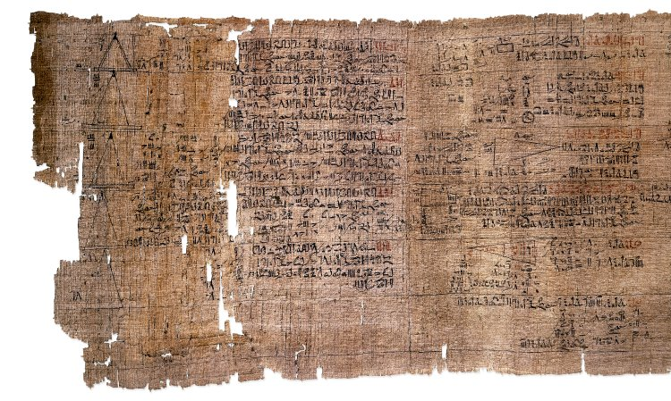
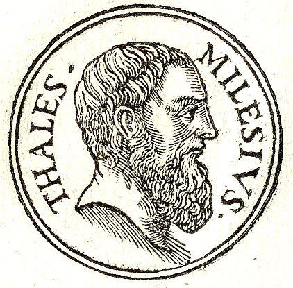
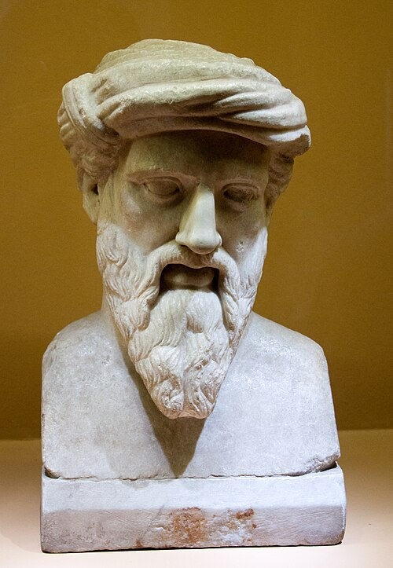
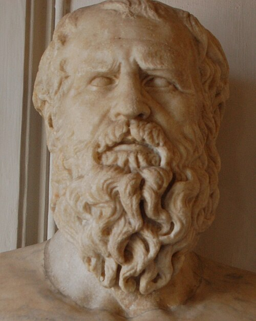
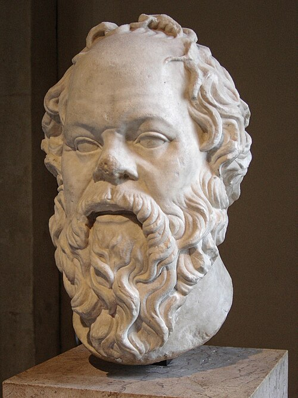
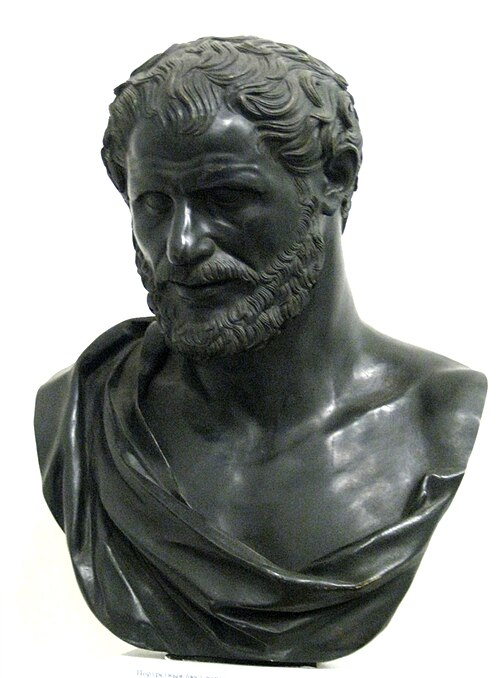
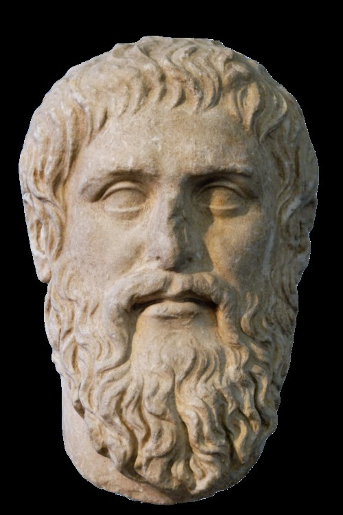
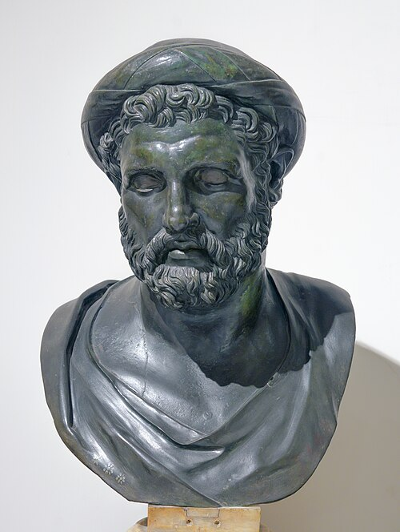

This timeline traces the development of physics from ancient natural philosophy through modern quantum mechanics and relativity. Each entry highlights key figures whose insights, discoveries, and innovations built the foundation for our understanding of the physical world. Use the filters below to explore by era or subject matter.
Era

Mathematical Texts (1900–1550 BC)
- Ancient Egyptian and Babylonian mathematical documents
- Babylonian Tablets (e.g. Plimpton 322)
- Moscow Papyrus (c. 1890 BC)
- Rhind Papyrus (c. 1550 BC)
- Document early arithmetic and geometry
- Describe slope using seked (rise/run)

Thales of Miletus (c. 624–545 BC)
- Born and died in Miletus, Ionia (Asia Minor)
- Greek philosopher, mathematician, and astronomer
- First philosopher in Greek tradition and (pre-Socratic) scientific philosophy
- Proposed Earth floats on water
- First to use deductive reasoning in geometry
- Predicted solar eclipse (May 28, 585 BC)
- Formulated Thales’ Theorem
- Hylozoist (matter is alive)
- Known as the “Olive Baron”

Pythagoras of Samos (570–495 BC)
- Born in Samos; died in Croton or Metapontum
- Greek philosopher and mathematician
- Pythagorean Theorem
- Theory of Proportions
- Identified Venus as a celestial body
- Believed Earth is spherical
- Universe governed by mathematical law
- May have originated musica universalis

Heraclitus of Ephesus (535–475 BC)
- Born and died in Ephesus
- Greek philosopher
- Panta rhei — “everything flows”
- "Change is the only constant"
- Unity of opposites
Philolaus (470–385 BC)
- Greek Pythagorean philosopher and astronomer
- Follower of Pythagoras
- Believed Earth not center of universe
- Originator of Pythagorean astronomy
- Harmony of limited/unlimited cosmos

Socrates (470–399 BC)
- Born and died in Athens, Greece
- Greek philosopher
- Founder of moral philosophy
- Used Socratic method of inquiry
- Heretic and “gadfly” of the state
- Sentenced to death for corrupting the minds of Athenian youth

Democritus (460–370 BC)
- Born and died in Abdera, Thrace
- Greek philosopher and atomist
- Atomic theory of the universe
- Believed all matter made of atoms
- Held flat-Earth view

Plato (427–347 BC)
- Born and died in Athens, Greece
- Greek philosopher
- Founded the Academy in Athens
- Developed Theory of Forms
- Student of Socrates, teacher of Aristotle, and associate of Eudoxus

Archytas of Tarentum (428–350 BC)
- Born in Tarentum; died in a shipwreck off the Apulian coast (by legend)
- Greek philosopher, mathematician, and statesman
- Contributed to number theory and irrational numbers
- Defined the harmonic mean
- Founder of mathematical mechanics
- Studied musical theory and astronomy

Aristotle (384–322 BC)
- Born in Stagira, Chalcidian League and died in Euboea, Macedonian Empire
- Greek philosopher and polymath
- Founded the Lyceum in Athens
- Wrote on nearly every domain of knowledge (physics, biology, zoology, metaphysics, logic, ethics, aesthetics, poetry, theatre, music, rhetoric, psychology, linguistics, economics, politics, and government)
- Believed that “objects tend toward a point due to their inner gravitas (heaviness)” and seek a “final cause” or “end”
- Believed force was needed to maintain motion (constant force = constant motion - “Continuation of motion depends on the continued action of a force”)
- Interpreted light in terms of “act” and “potency” as “the act of a transparent body, inasmuch as it is transparent”
- Tutored Alexander the Great
Menaechmus (380–320 BC)
- Greek mathematician
- Likely discovered conic sections while solving the Delian problem of doubling the cube
- Famously rejected shortcuts to learning geometry - When said to have been tutoring Alexander the Great, he was asked for a shortcut to understanding geometry. He replied to Alexander, “O King, for traveling over the country, there are royal road and roads for common citizens, but in geometry there is one road for all.” (Beckmann 1989)
- Associated with tutoring Alexander the Great

Euclid of Alexandria (325–270 BC)
- Father of geometry
- Author of Elements and other treatises
- Wrote on optics, fallacies, loci, mechanics
- “No royal road to geometry” (to Ptolemy I)
- * Possibly conflated with the story about Menaechmus and Alexander the Great

Aristarchus of Samos (310–230 BC)
- First to propose heliocentric model
- Placed Sun at center, not Earth
- Identified Philolaus’ “central fire” as the Sun
- Wrote On the Sizes and Distances of the Sun and Moon

Archimedes of Syracuse (287–212 BC)
- Mathematician, engineer, inventor, physicist
- Anticipated calculus via infinite series
- Accurately approximated pi by measuring circles, spheres, cylinders, etc
- Created exponentiation
- Developed statics and hydrostatics
- Formulated Archimedes’ principle (buoyancy)
- Invented Archimedes’ screw & box (Ostomachion)
- Wrote a manual on constructing an Antikythera
- Wrote on mechanical theorems and floating bodies
- Was killed by a soldier against their orders during Siege of Syracuse!

Eratosthenes of Cyrene (276–194 BC)
- Founder of geography and chronology
- Chief librarian at Library of Alexandria
- Created system of latitude and longitude
- Calculated Earth's circumference and axial tilt
- Estimated distance to the Sun

Apollonius of Perga (240–190 BC)
- Defined conic sections: ellipse, parabola, hyperbola
- Advanced geometric theory of curves

Hipparchus of Nicaea (190–120 BC)
- Founder of trigonometry
- Discovered precession of equinoxes
- First reliable solar eclipse predictions
- Compiled first star catalog

Marcus Vitruvius Pollio (80/70–15 BC)
- Roman architect and engineer
- Performed measurements of specific gravity
- Known for De Architectura

Claudius Ptolemy (100–168 AD)
- Author of Almagest, Geographia, Optics, Harmonics, Planetary Hypotheses and Phaseis (Risings of the Fixed Stars) which included a star calendar/almanac
- Maintained geocentric model for 1300 years
- Nested spheres with epicycles
- Explained vision using rays, distance, and angle - size-distance invariance
- Believed music intervals should be based upon mathematical ratios like tetrachords and octaves (agreeing with the Pythagoreans and Pythagorean tuning though not explicitly the 3:2 ratio)
- Influenced Kepler’s Harmonice Mundi

Diophantus of Alexandria
- Known as the "father of algebra"
- Wrote Arithmetica, solving equations with symbols
- Early use of algebraic notation and methods

Aryabhata (476–550 AD)
- Indian mathematician and astronomer
- Introduced place-value system and zero
- Accurately calculated pi and Earth's rotation
- Wrote Aryabhatiya

John Philoponus (490–570 AD)
- Byzantine scientist and philosopher
- Proposed theory of impetus (early momentum) - stating that impetus diminishes over time
- Argued that motion fades without external force
- Criticized Aristotle’s causation and motion theories

Brahmagupta (598–668 AD)
- Indian astronomer and mathematician
- First to define rules for zero and negative numbers
- Introduced concept of gravity as gurutvakarshan
- Wrote Brahmasphutasiddhanta

Al-Khwarizmi (780–850 AD)
- Persian mathematician and astronomer
- Wrote foundational book on algebra
- Introduced Hindu-Arabic numerals to the West
- “Algorithm” derived from his name

Al-Kindi (c. 801–873 AD)
- Arab philosopher, mathematician, and scientist
- Wrote on optics, cryptography, and music theory
- Translated and preserved Greek philosophy
- One of the first to reconcile philosophy with Islam

Al-Farabi (c. 872–950 AD)
- Philosopher and logician known as the "Second Teacher"
- Wrote on metaphysics, ethics, and political theory
- Classified sciences and influenced Islamic Neoplatonism
- Composed works on music and its psychological effects

Ibn al-Haytham (965–1040 AD)
- Father of modern scientific method
- Pioneered use of experimental data, reproducible results
- Founder of modern optics
- Studied vision, light, and refraction

Ibn Sīnā (Avicenna) (980–1037 AD)
- Philosopher and polymath
- Distinguished between force and inclination
- Claimed motion continues until inclination is spent
- Influenced later theories of inertia

Shen Kuo (1031–1095 AD)
- Chinese scientist and statesman
- Studied earthquakes and erosion
- Described magnetic needle and true north
- Used camera obscura for optical research

Abu'l-Barakat al-Baghdaadi (1080–1165 AD)
- Islamic philosopher and physicist
- Refined ideas of motion and acceleration
- Critiqued Aristotelian physics
- Proposed non-linear acceleration from force

Petrus Peregrinus de Maricourt (fl. 1269)
- Studied lodestones and mapped magnetic lines
- Discovered magnetic poles on spherical magnets
- Introduced concept of magnetic meridians
- Laid foundation for theories of polarization

Thomas Aquinas (1225–1274)
- Major advocate of Aristotelian philosophy in 13th century Europe
- Formulated Thomist metaphysics and ethics
- Declared metaphysics the supreme natural science

William of Ockham (1285–1347)
- Originator of Ockham’s Razor
- Undermined Aristotelian scholasticism
- Laid groundwork for Renaissance philosophy
- Early contributor to rotational dynamics

Jean Buridan (c. 1300–1358)
- Refined and popularized the theory of impetus
- Suggested motion continues unless opposed
- Challenged Aristotelian views on dynamics

Leonardo da Vinci (1452–1519)
- Artist, engineer, anatomist, and inventor
- Studied hydrodynamics, flight, and human anatomy
- Drew mechanical devices and military machines
- Explored physics through observation and sketches

Nicolaus Copernicus (1473–1543)
- Proposed heliocentric model of the solar system
- Placed Earth in motion around the Sun
- Published De revolutionibus orbium coelestium in the year of his death

William Gilbert (1544–1603)
- Physician to Queen Elizabeth
- Published De Magnete, beginning modern magnetism
- Greatly extended the work of Peregrinus
- Proposed Earth is a giant magnet
- Coined the term electric force
- Distinguished electric vs. magnetic attraction
- Hypothesized electric effluvia and atmospheres
- Influenced Newton and later natural philosophers

Tycho Brahe (1546–1601)
- Danish astronomer and nobleman
- Made highly accurate naked-eye observations
- Developed a geo-heliocentric model of the solar system
- Mentor to Johannes Kepler

Galileo Galilei (1564–1642)
- Father of modern experimental science
- Defended heliocentrism in Dialogue Concerning the Two Chief World Systems (1632)
- Proposed Galilean relativity for inertial frames
- Clashed with Aristotelians and Church authorities
- Attempted to measure speed of light with lanterns
- Famously muttered “Eppur si muove” – “And yet it moves”

Johannes Kepler (1571–1630)
- Disproved Aristotelian separation of heavens and Earth
- Developed three laws of planetary motion
- Used Tycho Brahe’s data to support heliocentrism
- Emphasized mathematical laws of nature
- Inspired Descartes and later mechanistic models

Isaac Beeckman (1588–1637)
- Dutch philosopher and scientist
- Advocate of mechanical philosophy
- Influenced Descartes and Gassendi
- Applied mathematics to physical problems

Pierre Gassendi (1592–1655)
- French priest, philosopher, mathematician, and astronomer
- Reintroduced ancient atomism to modern science
- Critic of Aristotelian and Cartesian philosophy
- Influenced Newton and Boyle

René Descartes (1596–1650)
- Father of modern philosophy: “Cogito, ergo sum”
- Founded mechanical philosophy (mechanism)
- Epistemological Rationalism
- Invented Cartesian coordinates and analytic geometry
- Proposed 3 laws of motion and universal mechanism
- Postulated concept of “plenum” or “aether” and its mechanical properties as well as “vortices”
- Theory of aether and vortices in magnetism
- Linked color and light to rotary motion of matter
- “Give me matter and motion and I will construct the universe”

Pierre de Fermat (1607–1665)
- Mathematician and lawyer
- Formulated the Principle of Least Time - "Nature always acts by the shortest course."
- Developed method of adequality (proto-calculus)
- Influential in geometry, number theory, and optics

Blaise Pascal (1623–1662)
- French mathematician, physicist, philosopher
- Developed Pascal's triangle and early probability theory
- Invented mechanical calculator
- Contributed to fluid statics and pressure theory
- Wrote Pensées on faith, reason, and the human condition

Robert Boyle (1627–1691)
- Father of modern chemistry
- Published The Sceptical Chemist
- Distinguished between elements, compounds, and mixtures
- Formulated Boyle’s Law for gases
- Promoted experimental method and mechanical philosophy

Christiaan Huygens (1629–1695)
- Criticized Descartes for clinging to Greek-style philosophy and envying Galileo
- Championed wave theory of light over Newton's corpuscles
- Proposed that light travels as a disturbance through an invisible aether permeating all matter—even vacuums
- Developed Huygens’ Principle to explain reflection and refraction, succeeding where others failed
- Studied birefringence and showed that split light beams behaved differently than ordinary rays
- Tried to explain gravity via fluid vortices pushing matter toward Earth’s center

Robert Hooke (1635–1703)
- Assistant to Robert Boyle; polymath inventor and early physicist
- Proposed light as rapid vibratory motion—a major step toward wave theory
- Introduced the concept of the wavefront to explain reflection and refraction
- Improved Cartesian models by correcting errors in light refraction (e.g. “trajection”)
- Suggested that color results from deflection of wavefronts (prismatic colors)
- Held that light propagates more easily in rarer media, but more powerfully in denser ones
- His color theory was later refuted by Newton, but his idea of light as motion influenced Huygens
- Played a key transitional role between Cartesian statics and Huygens’ elastic wave theory
- Hooke’s rivalry with Newton led to disputes over optics, motion, and credit for discoveries

Isaac Newton (1642–1727)
- Developed the first comprehensive laws of motion and universal gravitation (Principia, 1687)
- Discovered that white light is composed of all colors—demonstrated via prism experiments
- Refuted the idea that color is created by reflection or refraction; called it a connate property of light
- Introduced the particle (corpuscular) theory of light, associating colors with properties of particles
- Investigated periodicity in light: red light has the longest “fit” (wavelength), violet the shortest
- Explained polarization, birefringence, and reflection using particle orientation analogies
- Viewed aether as a medium of varying density—its vibrations explain light, heat, and gravity transfer
- Argued gravity works through space but rejected the idea that it acts across a vacuum without mediation
- Clashed with Cartesians over “action at a distance” and opposed vortex models of planetary motion
- His work was initially resisted—Cambridge still taught Descartes into the 18th century
- Was ultimately championed in Britain, with Edinburgh adopting Newtonian teaching before Cambridge
- Criticized for using the word “attraction”—Voltaire claimed French ridicule delayed Newton's acceptance
- Influenced by and responded to Huygens’ and Hooke’s work, but redefined physics on a mathematical foundation
- His legacy eclipsed Descartes’, reshaping philosophy, astronomy, and the scientific method

Ole Rømer (1644–1710)
- Danish astronomer and professor of mathematics in Paris
- First to demonstrate that light travels at a finite speed
- Explained delays in Jupiter's eclipses based on Earth-Jupiter distance
- Estimated light takes ~11 minutes to travel from Sun to Earth

Daniel Bernoulli (1700–1782)
- Swiss physicist and mathematician from the Bernoulli family dynasty
- Formulated Bernoulli’s Principle—pressure and velocity tradeoff in fluids
- Applied statistics to gas laws and hydrodynamics
- Early contributor to kinetic theory and probability

Benjamin Franklin (1706–1790)
- American polymath and Enlightenment figure
- Demonstrated that lightning is electrical using a kite experiment
- Invented the lightning rod and coined “positive” and “negative” charge
- Proposed a single-fluid model of electricity

Leonhard Euler (1707–1783)
- Prolific Swiss mathematician and physicist
- Contributed to mechanics, optics, astronomy, hydrodynamics, and topology
- Formulated Euler’s Formula: \( e^{ix} = \cos x + i \sin x \)
- Introduced Euler’s Equation in fluid dynamics
- Popularized modern notation: \( f(x) \), \( \sum \), and \( i \) for √−1

Jean-Baptiste d’Alembert (1717–1783)
- French mathematician, mechanician, physicist, and philosopher
- Co-editor of the Encyclopédie with Diderot
- Formulated the d’Alembert principle in dynamics
- Derived the one-dimensional wave equation
- Contributed to music theory and fluid mechanics

Georges-Louis Le Sage (1724–1803)
- Genevan physicist
- Built an early electric telegraph (1774)
- Proposed gravitational screening theory using ultra-mundane particles
- Developed a Cartesian-inspired explanation for Newtonian gravity

Henry Cavendish (1731–1810)
- British natural philosopher and chemist
- Proposed inverse-square law for electric force (1762)
- Measured Earth's density with torsion balance experiment
- Discovered hydrogen and studied its properties

Joseph-Louis Lagrange (1736–1813)
- Developed Lagrangian mechanics from Newton’s laws
- Founded the calculus of variations
- Worked extensively on celestial mechanics and number theory
- Formulated Lagrange’s equations of motion

Charles-Augustin de Coulomb (1736–1806)
- Formulated Coulomb’s law of electrostatic force (1784)
- Studied friction, torsion, and magnetism
- Pioneered precision measurement in physics

Alessandro Volta (1745–1827)
- Invented the first chemical battery: the voltaic pile
- Established voltage as a measurable electrical property
- Disproved Galvani’s idea of animal electricity
- The unit of electric potential, the volt, is named after him

Pierre-Simon Laplace (1749–1827)
- Astronomer and Mathematician
- Wrote Dynamic Theory of Tides (1775) and Mécanique Céleste (1799 – 1825), unifying celestial mechanics
- Developed Laplace’s equation and spherical harmonics
- Formulated a theory of tides and gravitational collapse, being of of the first to postulate black holes
- Laid groundwork for statistical mechanics and probability and invented the Z-transform

André-Marie Ampère (1775–1836)
- Formulated Ampère’s law of electromagnetism
- Described angular dependence of force between current-carrying wires (1820)
- Namesake of the unit of electric current: ampere (A)

Hans Christian Ørsted (1777–1851)
- Discovered that electric currents affect magnetic needles (1820)
- Laid the foundation for the field of electromagnetism
- Ørsted’s law describes magnetic fields around currents

François Arago (1786–1853)
- Astronomer, physicist, and mathematician
- Observed eddy currents and rotatory magnetism (1824) and that most conductive bodies could be magnetized (to be later fully explained by Faraday)
- Influenced later work by Faraday and Maxwell

Michael Faraday (1791–1867)
- Developed the field concept for electricity and magnetism
- Discovered electromagnetic induction (1831)
- Invented the Faraday disc (first homopolar generator)
- Explored gravity’s relation to electromagnetism
- Wrote On the Physical Character of the Lines of Magnetic Force (1852) which investigated gravity, electricity, radiation, and propagation media.

William Rowan Hamilton (1805–1865)
- Founded Hamiltonian mechanics
- Developed quaternions (non-commutative algebra)
- Unified optics and dynamics via characteristic functions

James Prescott Joule (1818–1889)
- Discovered the mechanical equivalent of heat
- Formulated Joule’s law of heating
- Namesake of the joule (J), the SI unit of energy

Jean Bernard Léon Foucault (1819–1868)
- Demonstrated Earth’s rotation using the Foucault pendulum
- Coined the term “gyroscope”
- Measured the speed of light more precisely

Hermann von Helmholtz (1821–1894)
- Formulated conservation of energy (First Law of Thermodynamics)
- Advanced theories of vision, hearing, and perception
- Investigated vortex motion and physiological optics

William Thomson, Lord Kelvin (1824–1907)
- Engineer and mathematical physicist
- Formulated the 1st and 2nd Laws of Thermodynamics
- Introduced the Kelvin Temperature Scale
- Developed the concept of vector potential (1851)
- Knighted by Queen Victoria in 1866 for his work on the transatlantic telegraph

Georg Friedrich Bernhard Riemann (1826–1866)
- Formulated Riemann integral and Riemannian geometry
- Described Riemann surfaces and functions
- First to show retarded potentials solve the inhomogeneous wave equation (1858)
- Influenced mathematical physics and relativity

James Clerk Maxwell (1831–1879)
- Formulated classical electromagnetic theory
- Unified electricity, magnetism, and light via field equations
- "On Faraday’s Lines of Force" (1855–56)
- "On Physical Lines of Force" (1861)
- "A Dynamical Theory Of The Electromagnetic Field" (1865)
- Identified Faraday’s law as describing two separate phenomena: motional EMF and transformer EMF

Oliver Heaviside (1850–1925)
- Invented modern vector notation
- Reduced Maxwell’s 20 equations to 4
- Corrected J.J. Thomson’s magnetic force law and identified the correct force due to an external magnetic field (1885–89)
- Predicted a cogravitational field
- Published "A Gravitational and Electromagnetic Analogy" (1893)

Hendrik Lorentz (1853–1928)
- Abandoned Maxwellian descriptions of ether and conduction, distinguished between matter and the aluminiferous aether and applied the Maxwell-Heaviside equations at a microscopic scale using Lagrangian mechanics
- Derived the Lorentz force law and identified the contribution of the electric force (1895)
- Applied Lagrangian mechanics to electromagnetic systems

Nikola Tesla (1856–1943)
- Inventor and electrical engineer
- Developed AC electrical systems and wireless energy concepts
- Built Tesla coil and experimented with radio transmission

J.J. Thomson (1856–1940)
- Discovered the electron using a cathode ray tube
- First to derive electromagnetic forces on a moving object from Maxwell's equations
- Determined magnetic force at half correct value due to incomplete displacement current theory

Ernest Rutherford
- Father of nuclear physics
- Discovered alpha and beta radiation
- Proposed nuclear model of the atom

Albert Einstein
- Developed Special and General Relativity
- Explained photoelectric effect, contributing to quantum theory
- Won Nobel Prize in Physics (1921)

Max Born
- Introduced probabilistic interpretation of quantum wave functions
- Significant contributions to quantum theory

Niels Bohr
- Developed Bohr model of the atom
- Introduced quantum jumps and energy levels
- Key figure in Copenhagen interpretation of quantum mechanics

Wolfgang Pauli
- Formulated Pauli Exclusion Principle
- Made foundational contributions to quantum field theory

Enrico Fermi
- Built the first nuclear reactor
- Contributed to quantum theory, nuclear and particle physics
- Developed Fermi-Dirac statistics

Paul Dirac
- Unified quantum mechanics and special relativity
- Predicted existence of antimatter
- Formulated Dirac equation

Richard Feynman (1918–1988)
- Developed path integral formulation of quantum mechanics
- Co-founder of quantum electrodynamics (QED)
- Renowned educator and science communicator

Oleg Dmitrovich Jefimenko (1922–2009)
- Derived general time-dependent solutions to Maxwell’s equations
- Showed that charge and current densities generate both electric and magnetic fields
- Emphasized that fields arise directly from source distributions, not just potentials